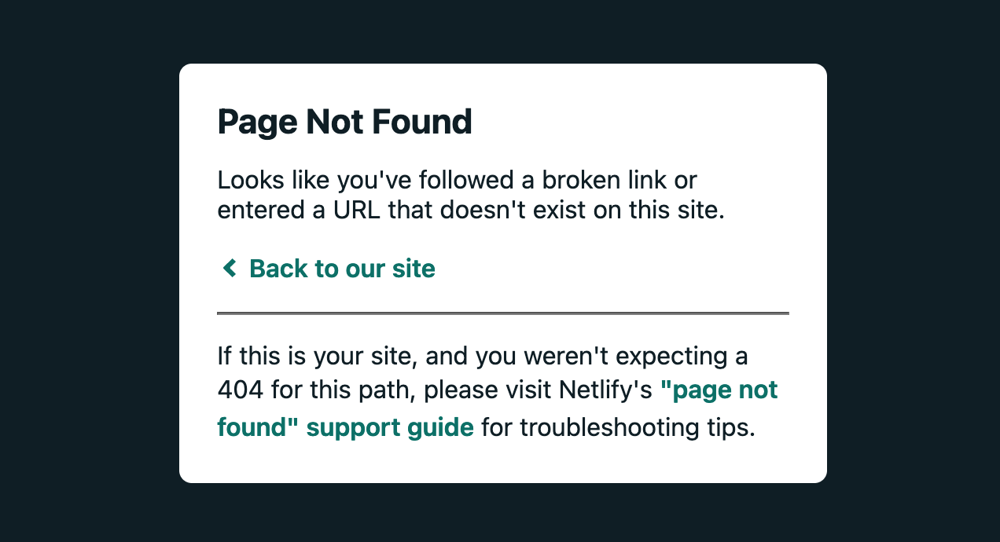
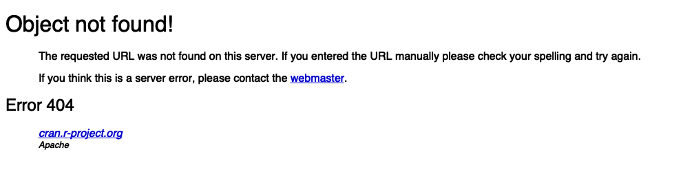

install.packages("remotes") # if not yet installed
remotes::install_github("matt-dray/linkrot")
library(linkrot)
tl;dr
I wrote a little function to check web pages for link rot and put it in the tiny R package {linkrot} in case you want to use or improve it.
Page not found
You’ve clicked a link before and been taken somewhere you weren’t expecting. Sometimes it’s because you’ve been rickrolled,1 sure, but content on the internet is constantly being moved or removed and links break all the time.
A hyperlink that no longer resolves can be considered to have ‘rotted’. As time marches on, the ‘rottenness’ of the internet increases. This can be frustrating.
This blog is getting on for a hundred posts over three years. It would not be a surprise if link rot has taken hold. How big is the problem?
Rising damp
So, basically I want to visit every link in every post on this blog and see if it’s still working.2
I’ve written the function detect_rot() to do this for any given web page and I’ve put it in the {linkrot} package on GitHub. To install:
In short, the detect_rot() function takes the URL of a web page and returns a tibble with details of each link from that page and whether it can be reached.
I’ve basically built it for my own amusement, so there’s no guarantees. Feel free to suggest or amend things in the GitHub repo.
Check one post
Let’s feed in the first post on this blog, from April 2018:
trek_url <- "https://www.rostrum.blog/2018/04/14/r-trek-exploring-stardates/"
trek_rot <- detect_rot(trek_url)Checking <https://www.rostrum.blog/2018/04/14/r-trek-exploring-stardates/> ..............................It can take a short while for the function to visit every link. To let us know it’s working, the URL is printed to the console and then a period (.) is printed for every link that’s been successfully visited (a bit like a progress bar).
We’re returned an object with a bunch of information.
str(trek_rot)tibble [30 × 6] (S3: tbl_df/tbl/data.frame)
$ page : chr [1:30] "https://www.rostrum.blog/2018/04/14/r-trek-exploring-stardates/" "https://www.rostrum.blog/2018/04/14/r-trek-exploring-stardates/" "https://www.rostrum.blog/2018/04/14/r-trek-exploring-stardates/" "https://www.rostrum.blog/2018/04/14/r-trek-exploring-stardates/" ...
$ link_url : chr [1:30] "https://www.r-project.org/about.html" "https://en.wikipedia.org/wiki/Star_Trek:_The_Next_Generation" "http://www.st-minutiae.com/resources/scripts/#thenextgeneration" "https://github.com/zeeshanu/learn-regex/blob/master/README.md" ...
$ link_text : chr [1:30] "R statistical software" "Star Trek: The Next Generation" "Star Trek Minutiae" "regex" ...
$ response_code : num [1:30] 200 200 200 200 200 200 200 404 200 200 ...
$ response_category: chr [1:30] "Success" "Success" "Success" "Success" ...
$ response_success : logi [1:30] TRUE TRUE TRUE TRUE TRUE TRUE ...So, it’s a tibble with six columns and a row for each link on that page that’s been checked. Basically, the output tells us the URL and text of each link and also whether the page was reachable or not.
The tibble includes a special officially-standardised three-digit ‘status code’ in the response_code column. These indicate whether contact was successful, with a specific reason. For example, 200 represents a typical success (‘OK’), but you may be familiar with 404 (‘not found’) if you’ve visited a broken link before.
We can extract any broken links using the logical response_success column.
trek_rot[!trek_rot$response_success, c(4, 5, 2)]# A tibble: 1 x 3
response_code response_category link_url
<dbl> <chr> <chr>
1 404 Client error https://cran.r-project.org/web/packages/rvest…So, at time of writing, that post has one broken link: an {rvest} package vignette for SelectorGadget that’s no longer active on the CRAN site. It has status code 404 (‘client error’), which basically means the thing couldn’t be found.
We can confirm this by visiting the URL, but you could also use the {webshot} package to go and retrieve an screenshot of the page3.
library(webshot)
cran_404 <- trek_rot$link_url[!trek_rot$response_success]
webshot(cran_404, vheight = 250)
So that’s CRAN’s 404 page to tell us that the page couldn’t be fetched.
Check whole blog
Now we know how it works for one page, we can apply the function over every post of this blog and see how many links have rotted.
First we need all the post URLs, which are all available from the blog’s homepage. The links returned are internal (like 2021/06/28/pixel-art/), so we need to add on the https://www.rostrum.blog/ bit. We also need to filter out any links that aren’t posts (like the ‘About’ page).
# Load packages
suppressPackageStartupMessages({
library(xml2)
library(rvest)
library(dplyr)
library(purrr)
})
# The URL of this blog's homepage
blog_url <- "https://www.rostrum.blog"
# Fetch all the links from the blog home page
blog_hrefs <-
read_html(blog_url) %>% # get full homepage HTML
html_nodes("a") %>% # nodes with links, <a>
html_attr("href") # the URL attribute
# Only links to posts
posts <- paste0(blog_url, blog_hrefs[grepl("^/20", blog_hrefs)])
tail(posts) # preview[1] "https://www.rostrum.blog/2018/06/05/tid-ye-text/"
[2] "https://www.rostrum.blog/2018/05/25/cloud-pie/"
[3] "https://www.rostrum.blog/2018/05/19/pokeballs-in-super-smash-bros/"
[4] "https://www.rostrum.blog/2018/05/12/accessibility-workshop-at-sprint18/"
[5] "https://www.rostrum.blog/2018/04/27/two-dogs-in-toilet-elderly-lady-involved/"
[6] "https://www.rostrum.blog/2018/04/14/r-trek-exploring-stardates/"Now we can use {purrr} to iterate the detect_rot() function over the pages. By using map_df() we can get a data frame as output rather than a list. I’ve hidden the printed output from detect_rot() this time because there would be nearly 100 lines of output (one per post).
results <- map_df(posts, detect_rot)So, this results tibble has 23311 links from 95 posts, or about 25 links per post.
Again, we can filter the logical response_success column to see which links weren’t successfully resolved.
rotten <- filter(results, !response_success)
nrow(rotten)[1] 61So in total there were 61 links out of 2331 that did not return a ‘success’, which works out to about 3% being unreachable.
We can count the reasons for these failures by looking at the status codes.
count(rotten, response_code, sort = TRUE)# A tibble: 6 x 2
response_code n
<dbl> <int>
1 404 53
2 400 4
3 403 1
4 406 1
5 410 1
6 502 1You can see most of these status codes are in the 4xx range, which is the group of codes that mean ‘client error’. Usually this is a problem with the link you’ve provided, like 404 is ‘not found’, 403 is ‘forbidden’ and 406 is ‘not acceptable’.
It’s hard to tell whether this level of link rot is good or bad, but remember that these are links that have failed within the past three years. Imagine how bad this might look in another 10 years. By comparison, a quarter of links on the New York Times website were completely inaccessible, stretching back to 1996.
I’d be interested to know whether this is comparable to your blog or website.
Surveying for rot
We’ve seen it in action, but how does the function work? I’m not claiming the approach is optimal, but it obviously worked for my needs. You’ll probably find the approach naive if you have any experience in dealing with HTTP requests from R.
Validate, fetch, check
You can find the function definition for detect_rot() in the {linkrot} source code. It has three underlying steps, each of which has a helper function:
- Check that the provided URL is valid with
.validate_page() - Scrape the links from the page with
.fetch_links() - Visit each link and check its response code with
.check_links()
So, the URL provided by the user is first checked with help from the {httr} package. We GET() the page and then extract the status_code() and check for an http_error(). If all is well (i.e. no error), then we can continue.
To get the links from the URL, we first scrape the page with xml2::read_html() and then use {rvest} functions: html_nodes() to grab all the nodes with links, then html_attr() and html_text() to extract the URLs and link text from each.
Finally, each of the URLs is visited with GET() and the http_status() is extracted. The final data frame is converted to tibble (for ease of reading) and returned to the user.
Limitations
Of course, it’s possible that GET() will fail to reach a page for reasons other than it being missing. Sometimes there can be a momentary blip, but detect_rot() is simple and never retries a link.
Additionally, there are some links that {httr} struggles to contact. I wrapped functions internal to detect_rot() inside tryCatch() so any failures appear as NA in the response_code column. The printed output for detect_rot() also displays an exclamation point (!) instead of a period (.) when being run. For example, there were 8 links that had this problem for this blog.
I welcome any thoughts or suggestions, particularly around testing. I’d like to use this package as a way to learn proper HTTP testing and have found rOpenSci’s HTTP Testing in R book useful so far. Eventually I might convert detect_rot() to use the {httr2} package when it’s released.
Now what?
I could go back and fix the broken links, but maybe it’s not that big a deal. I don’t have any data on what people click on, so I can’t really tell if it’s worth it.
But anyway, didn’t I say ‘decay is inevitable’? I can fix things, but more things will break.
I wasn’t expecting this to get quite so existential.4
Environment
Session info
Last rendered: 2023-07-09 19:23:02 BSTR version 4.3.1 (2023-06-16)
Platform: aarch64-apple-darwin20 (64-bit)
Running under: macOS Ventura 13.2.1
Matrix products: default
BLAS: /Library/Frameworks/R.framework/Versions/4.3-arm64/Resources/lib/libRblas.0.dylib
LAPACK: /Library/Frameworks/R.framework/Versions/4.3-arm64/Resources/lib/libRlapack.dylib; LAPACK version 3.11.0
locale:
[1] en_US.UTF-8/en_US.UTF-8/en_US.UTF-8/C/en_US.UTF-8/en_US.UTF-8
time zone: Europe/London
tzcode source: internal
attached base packages:
[1] stats graphics grDevices utils datasets methods base
loaded via a namespace (and not attached):
[1] htmlwidgets_1.6.2 compiler_4.3.1 fastmap_1.1.1 cli_3.6.1
[5] tools_4.3.1 htmltools_0.5.5 rstudioapi_0.14 yaml_2.3.7
[9] rmarkdown_2.23 knitr_1.43.1 jsonlite_1.8.7 xfun_0.39
[13] digest_0.6.31 rlang_1.1.1 evaluate_0.21 Footnotes
Don’t worry, you can see from the URL that this doesn’t go to the YouTube video! it goes to the excellent pudding.cool site, which has some great analysis of the rise and rise (and rise) of Rickrolling.↩︎
That’s links to other pages on the internet, because links also exist to take you to these footnotes, or point elsewhere internally to this website.↩︎
If not already installed, you’ll be prompted by {webshot} to install phantomjs with
webshot::install_phantomjs().↩︎Actually yes, dear reader, he was; he really was.↩︎
Reuse
CC BY-NC-SA 4.0